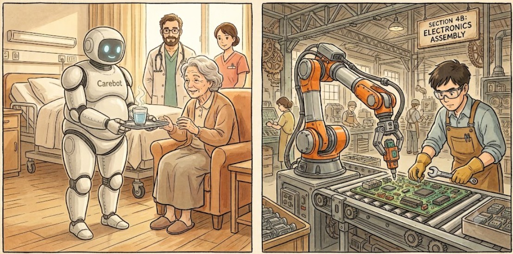

About Human-Robot Modeling

Human Motion Acquisition and Modeling
Human motion acquisition is the process of tracking, capturing, and transforming physical human body movements into digital spatial coordinates or kinematic data streams over time. By reading sensory tracking inputs—ranging from camera-based optical skeletons to wearable inertial measurement units (IMUs)—intelligent systems can decode a person's behavior, posture, and spatial trajectory.
As automation evolves from isolated machinery to interactive, adaptive systems, human motion acquisition serves as the critical sensory link across several key domains:
Key Applications
Human-Robot Collaboration (HRC) in Industrial Settings: In modern manufacturing, human workers and industrial robots (cobots) share the same physical workspace. Motion acquisition enables real-time safety monitoring and intent recognition. By tracking a worker's hand trajectories or torso lean, a cobot can dynamically predict upcoming movements, slowing down or altering its path to prevent traumatic injuries while smoothly assisting with heavy lifting or precise assembly loops.
Healthcare Robotics: In medical and rehabilitation environments, capturing motion with high precision allows therapeutic robots to assist patients recovering from neurological or physical trauma. Exoskeletons and patient-handling robots use motion data to sense a patient's voluntary muscular effort and provide adaptive mechanical support, ensuring targeted rehabilitation and safe mobility assistance.
Service Robots: For robots operating in unstructured public environments—such as hospitality, logistics, or domestic assistance—motion acquisition allows machines to navigate naturally around people. By understanding walking trajectories and tracking subtle interpersonal spatial boundaries, service robots can safely deliver items, guide guests, and operate seamlessly in crowded corridors.
Real-Market & Commercial Interaction: In retail, consumer spaces, and digital workspaces, tracking human motion transforms user experiences. It powers touchless gesture-based control interfaces, automated checkout tracking systems that note when items are lifted from shelves, and advanced ergonomic mapping tools that study consumer behavior, workspace posture, and product interaction in physical stores.
Future Applications: Looking ahead, advanced motion acquisition will merge deeply with predictive AI frameworks like Transformers and predictive sequence models. Future systems will move beyond reacting to *current* positions and instead seamlessly forecast complex human trajectories multiple steps into the future. This will unlock ultra-responsive neural prosthetics, highly immersive metaverse world-building, and space-exploration rovers that mirror an astronaut's movements across planetary terrain.